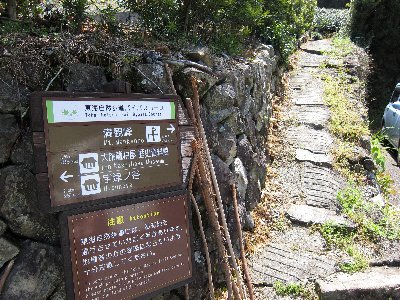
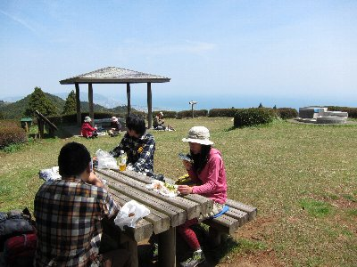

春のハイキング＞満観峰（おにぎり部） | 2011年4月 幹事：べっしー |
|---|---|
| 暖かくなって、自然の中に出かけたい気分になる春です。 じゃ〜、満観峰でしょう！ 満観峰は、過去のイベントにも書いてあるので今更ですが、静岡市と焼津市の境に有る、標高470m程度の手軽なハイキング山として、市民に親しまれています。コースも多彩で、静岡市の小坂から、焼津市の花沢の里、道の駅から、他にもありますが、メインがこんな感じでしょうか。 私たちは、小坂と花沢の里からは登ったことがあるので、今回は静岡市丸子の「宇津ノ谷道の駅」からのコースにしました。ここから蔦の細道ルートもあるのですが、今回は、逆川集落コースを。 午前10時に道の駅を出発。逆川沿いの舗装道路を歩いていきます。実に良い天気でして、そこらかしこに咲く花々を目出ながら、写真を撮りながら、ゆっくりと歩いていきます。 あっ、今回はいづみ、アル兄、sugar、私の4名です。 しばらく歩くと橋に「満観峰ハイキングコース」の看板が掛っていて、その向こうに集落が見えます。これが逆川集落なのでしょう。 大きな桜の木が綺麗ですが、すでに若干葉桜です。残念。 逆川集落は、宇津ノ谷峠の集落と似ている感じで、趣があります。時間がゆっくり流れているようです。下見板張りの木造家屋は、なにか落ち着きますね。縁側でお茶したいです。 | |
 道ばたにチョコチョコと花が |  逆川集落手前です |
| 集落を道沿いに行くと、左手の畑に入る道に「ハイキングコース」の看板が出ます。ここから先は、個人所有の土地を通らせて頂くようなので、気をつけましょう。 畑が終わると、川沿いの樹林帯に入ります。ここの川の水が集落の飲み水になっているようですから、汚さないようにね。 ウグイスの鳴き声を聞きながら登っていきます。春の気候が気持ちいいです。これが夏に来ると、暑いんだろうな〜 途中で茶畑にでます。ちょうど新芽が出たころで、輝く緑の新芽を見ることが出来ました。 また樹林帯を登っていくと、舟川からのハイキングコースとぶつかります。このコースをチョイスする人達が多いのか、ここから他のハイカーを多数見かけました。 登りが若干急になり始めると、そろそろ山頂も真近です。 ゆっくり来たので約２時間で山頂に到着です。予定通りの昼12時到着。（コースタイムは1時間半だったかな？）写真撮るのに立ち止まったりしていた時間長かったからな。 | |
|  集落からのルート |  お茶の新芽が眩しい |
| すでに山頂では多くのハイカーが、昼食をとっています。中高年ばかりかと思っていたら、以外に若者グループも居たりして、満観峰も知られているんですね。と言うか、ハイキングする若者がいて良かったです。（高齢者ばかりじゃ、いつか人が居なくなっちゃう） 山頂には、大きな山桜かな？の白い花が咲いていて綺麗です。残念なことに晴れているけど、春霞みのためか、富士山はハッキリとは見えませんでした。駿河湾や静岡市・焼津市の町並みは見えました。やっぱり、ここは景色が良いです。 ちょうど空いたテーブルで、私たちも昼食のおにぎり（おにぎり部ですから）を食べました。食後にコーヒーとカステラを頂きマッタリ気分です。 ゆっくりと景色を眺めリフレッシュ出来たところで、来た道を戻りました。帰りは、何も撮らず休憩せずだったので、30〜40分で戻ってきました。（話しながらなので、そんなに早くはないと思ったけど） また来よう！ | |
|  満観峰山頂でお昼 |  山頂の桜（？） |
| 写真＆コメント ｂｙ べっしー | |